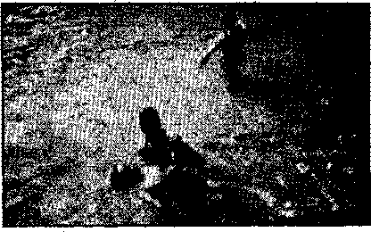
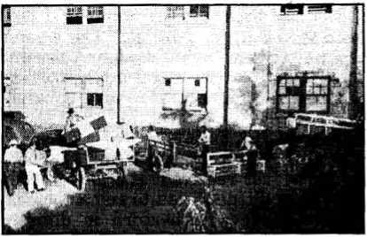
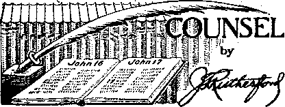

The “New Order” izj Europe (Part 3)
The New Government
At the Grand Assembly in San Jose .
A Prisoner in a California Road Camp 14
Counsel by J. F. Rutherford “Mother’s Day” '
Rocky Mountain States and Alaska
Under the Totalitarian.Flag “Lourdes”
Mussolini’s Tribute to John Huss
British Comment
Published every other Wednesday by WATCHTOWER BIBLE AND TRACT SOCIETY, INC, ' 117 Adams St., Brooklyn, N. Y_, U. S. A.
Editor Clayton J, Woodworth
Business Manager Nathan H. Knorr
Five Cents a Copy
x $1 a year in the United States
51.35 to Canada all other countries
NOTICE TO SUBSCRIBERS
Remittances: For your own safety, remit by postal or express money order. When coin or currency is lost in the ordinary malls, there is no redress. Remittances from countries other than those named below may bo made to the Brooklyn office, but only by international postal money orden
Receipt pf a now or renewal subscription will be acknowledged only when requested. Notice of Expiration is sent with the journal one month before subscription expires. Please renew promptly to avoid loss of copies. Send change of address direct to us rather than to the post office. Your request should reach us at least two weeks before the date of issue with which it is to take effect. Send your old as well as the hew address. Copies will’not be forwarded by the post office to your new address unless extra postage is provided by you, Published also in Afrikaans, Bohemian, Danish, Dutch, Finnish, French, German, Greek, Hungarian, Japanese, Norwegian, Polish, Portuguese, Spanish, Swedish, Ukrainian; also special Australian edition in English.
OFFICES FOR OTHER COUNTRIES
England 34 Craven Terrace, London, W. 2
Canada 40 Irwin Avenue, Toronto 5, Ontario
Australia 7 Beresford Road, Strathfield, N.S.W. South Africa 623 Boston House, Cape Town
Entered as second-class matter at Brooklyn, N. under the Act of March 3, 1379.
Notanda,
Petain and the Pope .
♦ Whatever tte pope wants is what Petain does. All Masonic property was confiscated and the proceeds will be used for “national charities’’. If those national charities should chance to be France’s horrid concentration camps, the Masons would probably he measurably content. American seamen were so moved by reports' of the suffering of Spanish refugees in France that they ottered to sail without pay to bring these unfortunates to America.
At the Gurs camp of 14,000, near the Pyrenees, there are 15 to 25 deaths a day. Some starve themselves to death to get out of their misery. They include insane, feeble-minded and 1,200 more than 70 years of age, one of them 106. Lice are omnipresent. There are no glass windows. It is impossible to read, on account of poor light from the skylights. There is no furniture, such as chairs and tables: only filthy mattresses. The children cannot play, nor the women work.
A generation ago the French government got sick of the interference of the “Old Whore” in France, severed diplomatic relations with the Vatican, confiscated much ecclesiastical property, and stopped the teaching of religion in the public schools. Now all this has been undone. See Consolation No. 561, pages 6-7.
For years Vichy has forbidden religious processions, but with old Mr. Petain at the helm religion has come back and put on a procession several miles in length. The account says, “Prominent in the procession was the Papal nuncio, Mgr. Valerio Valeri, in full canonicals, for whom the guards lining the, route presented -arms.” Why, sure! The account also says, “It was noted that all churches this morning had very large congregations.” You bet! If you want to live and get along in France now, you had better head for the nearest “church”, and pay milch and often.
“And in His name shall the nations hope?*—Matthew 12:21, A. R.V.
Volume XXII Brooklyn, N. Y., Wednesday, April 30, 1841 Number 564
The “New Order” in Europe (In Four Parts—Part 3)
THE refugee problem is heart-rending.
It is claimed that there are 3,000,000 Poles in Germany and Russia, 100,000 Poles in Lithuania, 30,000 Channel Islanders in Britain, 100,000 Spanish Loyalists hi France, 70,000 Germans and Austrians in Britain, 30,000’ Belgians, Dutch and French in Britain, and millions of others of all nationalities who are victims of the DeviEe “new order”, “the ABOMINATION OF DESOLATION Spoken of by Daniel the prophet.”
Quisling, alleged to be a Catholic, has withdrawn from Norwegian physicians the right of silence regarding the physical condition of their patients. The death penalty has been -declared for any who make contact with the royal family or with the British Government.*Sentences of One to two years’ imprisonment were given for listening to broadcasts given in Norwegian from London and Boston, U.S.A.
Quisling’s Norwegian Gestapo now have to attend every church service, for fear the minister might say something about the need of Jehovah’s kingdom, The Theocracy, for which the Savior taught men to pray. This is a waste of their time, however, as few clergymen ever have anything to say on the subject.
The Devil is a liar; so are the Jesuits; and so is the Jesuit-trained Hitler. After he had stated he had no intention of invading the Netherlands, and had got the Netherlands to issue a statement that they had no reason .to fear such an invasion, he put the long-planned invasion APRIL 30, 1941
into effect and the 350,000 armed soldiers of the Lowlands were as nothing in the presence of his trained fifth columnists and supporting troops.
Refugees from the Netherlands who reached New York stated that about oneseventh of the people of the country were fifth columnists, wore black shirts, and, when the Nazi invasion occurred, shot their fellow citizens from the housetops. The men who did this are known as N.$.B. The N stands for National and the S.B. is not what you think, but Socialist Bund.
In 28 minutes the Nazis turned the heart of Rotterdam into a complete ruin and then informed the Netherlanders that “henceforth they must think of themselves as one small segment in the “new European order’.”
You know about what occurred at Rotterdam: the heart of the city was destroyed as above stated. Rhenen was completely wiped out because it dared put up a fight. German shells and bombs destroyed everything in the city except the huge Catholic church, manifestly saved because of its friendliness to the “new order” attackers.
The German officials sent in to Holland are of the better sort of military men, serious and well-mannered, but their job is one of rapine none the less.
Some of the features of German rule in the Netherlands are frequent bombings, as in Haarlem and Den Helder, and then the circulation of reports that the bombings were by the British, when the Dutch know better; false reports and false photographs of the condition of Rotterdam; treacherous newspapers, al-
most as evil as in the United • States, which conceal the truth and publish only what will please the invaders; purgings of the bookshops of anything offensive to the Abomination that maketh Desolate, and finally the obliteration from schoolbooks of all references to Queen Wilhelmina. The Netherlands press is completely under Hitler’s control. Telephones and telegrams are rigidly censored and restricted. The radio blares forth only what the invaders want the people to hear. There is no automobile traffic. People may not move about from one town to another without permission. Families cannot ascertain whether missing members are dead or alive. Such is the “new order”.
When the Germans invaded the Netherlands many Dutch businessmen were murdered because they had been unwilling to help market German goods as “made in Holland”. Before the country was entered the Gestapo had lists of all persons that were to be slain, and these were disposed of at once. A few escaped by fleeing without attempting to visit their homes or take anything with them.
The queen had to suddenly pack some belongings in two pasteboard bags and skip to Britain, and even as she tried to get away from the “Aryans” those “master-men” with “new order” consciences bombed the pier from which she escaped. She took along with her a little nine-month-old granddaughter in a gas-proof box with a glass window in it, her choicest possession.
When the Germans entered Amsterdam they called at the head office of Louis Asscher, most famous diamond cutter in the world. He was there with his two sons.. They asked him where his diamonds were, and when he reported that they had been sent to America all three Asschers were murdered immediately.
The Chief Justice of the Netherlands, Dr. Visser, was murdered because, as a Jew, he had in private life condemned
persecution of the Jews in Germany. Prominent men in various walks of life, such as aidermen and editors, were killed and reported as suicides. Freemasonry was banned. J
The German military court that sentenced 18 Netherlanders to die by shooting, and 19 others to long prison terms, made the statement that any person who conspired even in thought against the German army is playing with a death sentence. It is significant that the special object of wrath is a Protestant secret society, known as “Les Gueux”, the name given the Netherlands Protestant soldiers who fought the battles of the Reformation against those Spanish subjects of the pope who sought domination of the world anew in the sixteenth century, as Hitler does in the twentieth. The court fined the city of Amsterdam $8,000,000 for a single week’s disorders, as a warning not to have hostile thoughts against the Abomination of Desolation.
Jehovah’s penalty for willful disobedience of the' laws of His Kingdom is death. Hitler would even take the place of the Creator. Disturbed by strikes and restlessness in the province of North Holland, the German military authorities notified the people that violations of orders might result in 15-year' sentences or in death. ,
No Netherlander may listen to a foreign radio station, under penalty of two years’ imprisonment or a fine of 100,000 guilders. Liars must be protected in their work, and the truth is “strange”, just as the Scriptures declare.
No Netherlands housewife may send more than 18 pounds of washing to the laundry in any one week. Dirt and ignorance go together, and the Dutch women are too clean to suit the “new order” mentality.
Netherlands farmers have been told by the German invaders that they may raise grains, beans, peas, potatoes, sugar beets and several other vegetables, and flax and hay, but nothing else. The growing of caraway, mustard and poppy seeds
CONSOLATION
is forbidden. The food that will be produced is much needed, but it is the Germans, not the Dutch, that are in control of the banks and of the country and that claim to be there to stay.
It is going to take some work to turn the Netherlanders into slaves, but the process is under way. Every citizen must now render some compulsory State service to the Abomination. The first job assigned was the guarding of army signposts near "The Hague for eight days. All forms of enterprises were required to release men for this work.
The Dutch could not do much in the way of reprisals for the loss of their land and their liberties, but they did something. All Dutch vessels were at once made available to Britain, including 26 German merchant ships that had taken'refuge in the Dutch East and West Indies. However, Hitler now controls the 35 to 40 shipyards of Holland and in some of these certain warships are now being made. < . . .
On the fifth day 6f the invasion of their land, when they saw that resistance was futile, the Netherlanders had the spunk to burn their great stores' of petroleum rather than permit them to fall into the hands of their despised masters. The invasion had the natural result in South Africa of uniting all factions in a determination to win-the war. The more countries that are robbed of their liberties by the “new order”, the greater the hatred that is aroused against it.
One of the military orders was that only Germans could have beer; this was in Amsterdam. Hitler’s concept of a master race had its origin iii"a beer saloon, in the company of pimps; so this was quite appropriate. The Horst Wessel drinking song had a pimp for its herd.
The New* York Times tells of some of the tricks the Dutch have used against the Nazis. One was to switch the signposts at. country crossroads, so as to cause a lot of fruitless marching. When soldiers
APRIL 30, 1941
march past, the little boys in the street taunt them with their failure to capture England by calling out, “Splash, splash, splash.” A shopkeeper, ordered to re-jnove the picture of the queen from his window, replaced it with a picture of Hitler and placed alongside the picture a pamphlet entitled “How to Swim”.
Jehovah’s Kingdom is the only remedy for the horrible state of affairs set forth in the foregoing, and it seems peculiarly appropriate to help believers in God by here inserting a page or so of extracts from the 1941 Yearbook of Jehovah’s witnesses, which all should read:
When the decision was taken to launch The Watchtower in Afrikaans and commence publication on June 1, it was not known that Hitler would invade the Netherlands. The May issue of the Netherlands Watchtower (and which proved to be the last one in that language for the time being) arrived in this country [South Africa] at the end of May. It contained the article which was published in the issue of the English Watchtower immediately preceding the first issue translated for the Afrikaans Watchtower. Thus brethren in this country who formerly relied ’ upon the Netherlands Watchtower continued to receive “food convenient” without a break.
‘‘Nothing is too marvelous for the Lord. No one of the Lord’s people perished in the war. [Written from the Netherlands] Even under the greatest bombardment the brethren were preserved. Also the 100,000 booklets were preserved as a testimony, were delivered to us, and are already distributed. The bound books have all been dispatched and distributed, even by most of the companies. There are now only a few copies left of Safety (Hol-landish), of which we had printed a new edition of 50,000 copies. Within two months after the war more than 160 brethren were immersed. A further number will be baptized during the coming weeks. It is not a seldom occurrence that people who know the truth but a fortnight participate in the work and identify themselves fully.
“As we did not receive any literature after the war, I began to have Consolation (Hollandish) printed here in the same size and with the same number of pages, namely, 32, as Consolation English. Of every edition we printed 15,000 copies, while before the wan we had been able to order but 4,000 to 5,000 copies. The issues for the month up to and including September had been printed beforehand, and every issue contained 24 pages of the book Salvation. On July 6 the Gestapo came and sealed the machines. Now we have two outside printers. From these we have already received 15,000 copies of the October issue of Consolation (Hollandish) and 2,000 copies of the August issue of The Watchtower. One printing factory is manufacturing the book Salvation, and to another printer we have given order to print the new book Religion, as well as a booklet.”
The consignment of 100,000 booklets (mentioned in the report) and Consolation (Hollandish) arrived in Rotterdam immediately before the outbreak of hostilities. When Rotterdam was intensely bombarded—one-third of the city is reported to be entirely demolished—the cartons of literature were still lying at the Goods “Station which was destroyed by fire. However, the booklets, although surrounded by the flames, were not consumed. They were then transported by lorry to the Society’s office. The driver, an outsider, pale of face and in great excitement, called at the office and asked the brother who received him: “'Whatever is there in these boxes? The Goods Station at Rotterdam Was all ablaze, and this consignment could be saved in spite of it! And on top of this, I now come from Rotterdam without having been stopped a single time by the military patrols; before and behind me, throughout the journey, all cars, vehicles and passers-by were stopped, and I- passed right through.” The brother answered : “This was not allowed to burn; the people must first know of this message.” Naturally the driver was interested and took books and booklets with him.
During the bombardment of Rotterdam a building with 500 people in it was hit. All of them either perished or’were injured, with the exception of four witnesses of Jehovah who happened to be at the entrance, and who through the powerful air pressure were thrown onto the street, receiving no hurt.
There was an invalid sister in a flat in Rotterdam, and a few witnesses of Jehovah visiting. Her bed was placed near the window, and as‘the air-raid alarm sounded a brother advised that the bed be removed to the inner wall. Hardly had this been done when a bomb hit the very place where the bed had stood.
One brother reported that his farm was preserved during the war, while around it everything had been shot to smithereens. This brother grows and supplies vegetables to a pioneer home.
A certain brother was five months in jail, and a few days before the German invasion he was released. The first day of the war a bomb fell on this very prison, killing and injuring many of the inmates; prison guards numbered among the injured ones. Also another brother was held in this same prison a few days before the war, but was released on account of his poor physical condition. Still elsewhere a brother was in a prison which was bombarded; he remained unhurt and fled from the prison with the consent of the superintendent.
All the pioneers from the pioneer home L. were arrested. The soldiers had surrounded the house under the lead of an officer. They thought that there would be Germans in the house, because previously there had been pioneers of this nationality there. The only German sister that had remained had fortunately left a few days before. After a short arrest the pioneers, being all'of Hollandish nationality, were released.
Among many others a certain little town was evacuated. A sister living there exhibited in her window an electric sign bearing the words, “The Theocracy brings life—Dictatorship brings death!” which sign she carefully left switched on during her absence for three days and nights. Thus the German soldiers entering the town received an interesting witness, and the neighborhood Came to know about it. When the sister upon her return removed the sign, she was asked why she did this. She explained: “The sign has fulfilled its purpose: you will now experience yourselves the truth of those words.”
Luxemburg is an almost solidly Catholic country and it was a very easy matter to arrange for the people to sign a “petition” that their country might become a part of Greater Germany, Officials had to sign or lose their jobs and pensions; businessmen had to sign or lose their licenses to do business; workingmen had to sign or they could get no work; peasants had to sign or be driven from the fields. All Luxemburg obeyed the priests and signed. All Jews were deported to unoccupied France.
A British correspondent of the Catholic Herald in Belgium, answering the question “Who sold the pass?” said: “The men who sold the pass are the Belgian pro-Nazi sympathizers, Catholics with confused consciences, men who were my intimate professional colleagues. The pass was sold at the Albert Canal. They sold it. I know now why they pleaded with me on May 11 to flee for my life. Me in a concentration camp would be unpleasant for them. The ‘bloody wage’ is theirs, if they cash it, in their hoped-for posts of auj^ority.” ,
Experience 'has taught'the 'greatest and best of the papers never to mention the Boman Catholic church except in ’ terms of praise. But apparently the Manchester Guardian was well convinced of the truth of the above admission when, back on May 31,1940, it said: “Well-informed persons in Belgium, including many Cabinet Ministers past " and present, have often been wondering who exactly were the people that were influencing the mind of King Leopold— it is significant of the thoroughly undemocratic atmosphere in which high quarters in Belgium have been living for years that hardly anybody could pretend to give this question any confident answer.” The Guardian goes on to say that . “the shocking pro-German propaganda of the Rexist and other Fascist papers enjoyed a strange immunity and seemed to have mysterious arid influential protection”.
APRIL 30, 1941
It is all simple enough. King Leopold’s sister is the wife of the crown prince of Italy, and it is generally conceded that he was tipped off to betray the French and British troops he had requested to come to his defense. When he surrendered his 500,000 soldiers to Hitler he left a great hole through which the Germans poured behind the British and French. His own government disowned him from Paris, The Vatican can tell every European and American ruler what he must do to have Catholic backing and to save his hide.
When the Belgian government was moved from Brussels to Ostend it was self-evident that the Catholics in the most influential positions were all tipped off as to what was going to happen. Among those that stayed behind at Brussels, waiting for their fellow-Catholic Adolf Hitler to take things over, were the Papal nuncio, the Italian ambassador, the counselor of the Spanish embassy, and John Cudahy, United States ambassador. It was natural enough for Cudahy, Papal ambassador of the United States to Belgium, and Kennedy, Papal ambassador of the United States to Britain, that they should get together and decide, as loyal Catholics, that Pacelli and Hitler are all right and Britain all wrong; that Hitler is a fine fellow, as proved by his throwing Nazi troops around Catholic churches in Belgium.
Lying is a fine art among the Jesuits; and Hitler has all the advantages of such training, and loves it with all his heart. It is a fact that just ten hours before the German planes were roaring over Belgium the radio was protesting the unfairness of the Allies in claiming it was Hitler’s intention to invade Belgium.
In preparation for overrunning the country nothing was overlooked. At many points there were posted large roadside maps showing alternate roads for military vehicles. Everywhere there were arrows and directions in letters easy to see, even in a blackout, the way to the
' 7
next town, the next military post and the next gasoline station. Almost a million soldiers were disarmed in 1.7 days in Netherlands and Belgium taken together. The Netherlands were cut in half in four days.
In the sack of Louvain, Belgium, in 1914, the famous library was destroyed. After the war a great effort was made, the library was rebuilt and again stacked with 700,000 books like those previously destroyed. Numerous American universities joined,in this work of restoration. Now the library is again ruined, a startling commentary on the fact that what took place November 11, 1918, was merely an armistice, merely that and nothing more.
Following standard Nazi tactics, the Jews of Belgium, 40,000 of them, were rounded up and put in concentration camps. All Jews over 15 years of age must be registered as such. Jews who fled the country when it was seized by the Germans may not return; and there is no 'conceivable reason why they would wish to do so. Significantly, there WTas no persecution of Catholics; all'priests returned and are carrying on their regular racket in their respective dioceses.
In its issue of December 13, 1940, the London Catholic Herald, after explaining that there are thousands of Belgian refugees in Britain who are Catholics, spills this one, which shows what the Catholic “Hierarchy of Authority” has everywhere under consideration:
Our method here in England is to create groups of young people who may take part in Continental Catholic Action, These groups will work to give to the refugees a little more comfort, both material and moral, and to prove , to them that Catholic Action has not crumbled away as the effect of war. but, on the contrary, when there is need of their help, the members reply "present”. '
The New Leader, issue of March 15, 1941, quotes an American newspaperman as having been told the following by a French soldier, now released, of what he actually saw when en route through Belgium:
I was an artillery man, 75 guns, and was taken prisoner in Belgium. Our misery began immediately. In spite of the immense heat we had to walk 50 kilometers a day, while for every twenty men there was one loaf of bread. Sometimes we also received a herring and some tea. Often people of the villages, through which we parsed, placed buckets of water before their doors for our thirst, but the German officers kicked over these buckets, and the water flowed away.
After arrival in the camps, Jewish, Polish and colonial soldiers were segregated. The treatment of the colonial soldiers is more inhuman than any I have ever witnessed. They were whipped across their faces, so that blood ran in streams. There were whole sections in which all the colored person,? had been killed. The Germans simply stated that some colored soldiers, hiding behind dying horses, had gunned the German troops after their capitulation. That’s why they were to be killed, said the officers.
Some of the German soldiers even told proudly of not having-hud to waste any bullets in killing the Negroes. The Negroes themselves had to prepare their mass graves. Then their brains were beaten out with the back of the fusil, and bodies were flung into the grave. Others were murdered with shovels. Those who had not been killed suffered enormously in the camps. In one of these, camps in East Prussia, there were dangerous epidemics, and most of the inhabitants died. We had the definite impression that these colored people were to be systematically annihilated. ■
The world is still on a gold basis. When the Belgians saw Hitler at the gates they divided up their gold among England, the United States, Canada, South Africa and France, $260,000,000 going to the latter country. When Hitler started to overrun France the French took all their gold, $1,400,000,000, to. Dakar, Africa, and this included the $260,000,000 that belonged to the Belgians. One of the terms of the armistice arranged was that, the Abomination having stolen the consolation
country of Belgium, they must also have its gold; so the French .betrayed their trust anti gave it up. But the French have money in America, and the Belgians attached their account for the $260,000,000 here.
For the occupation costs cd' having its country overrun by the German army, Belgium is assessed a sum in excess of its previous entire annual budget.
The eighteen days of blitzkrieg in Belgium destroyed 100 railway stations, 1,425 bridges and tunnels, 6,000 miles of highways, and 34,000 houses. Business is almost at an end for lack of materials, with the consequence of 2,000 workers a week being sent into.Germany, where their wages are barely sufficient to pay for their board and lodging.
Within three days after the German invasion eighty percent of the Belgian coal mines were Hooded, the preparations for the flooding having been made long in advance, but this act of sabotage accomplished nothing except perhaps some added cruelties from the chieftains of the "new order".
“National Whirligig/’ as published in the Seattle Star, says, that the Belgians have become so disgusted with their Nazi rulers that now whenever they hear explosions that may be British bombs they rush to the housetops to cheer, because they regard a British victory as their only hope of liberation.
When the Germans were about to close in on Antwerp, Belgium, three brothers, diamond merchants, chartered an ambulance and raced across France, Spain and Portugal with diamonds worth $338,000. They finally reached America, passed their cargo of diamonds through the custom house, and, as most of their customers are in America anyway, their business was not badly disrupted. But this is only one case in a million.
With the disappearance of the N ether-lands and Belgium into the Nazi maw there arises at once thF question of how the Dutch Fast and West Indies, Dutch Guiana and the Belgian Congo are to be
APRI L 30, 1941
governed. All together, there are something like 100,000,000 human creatures vitally interested in these matters, aside from the Dutch and the Belgians themselves. Theoretically, the Netherlands will continue their government from their place of exile in Britain. What will become of the Belgian Congo, after Leopold’s betrayal of the cause of the Allies, remains to be seen.
Various explanations have been offered for the French collapse. A dispatch from Vichy attempts to divert suspicion by saying (New York Post}: “A government spokesman ^aid that alcoholism was the chief cause of the moral collapse of the French army. He said that drunkenness was rampant in the army and that the disastrous ‘era of intoxication’ by young French soldiers had caused most of the eases of nervous breakdowns and shell shock when they had to face the German dive-bombers and tanks.”
The famous columnist Westbrook Pegler attempts to account for France’s fall by the argument that the journalism was corrupt and most men in public life were grafters; but the real reason, as set forth in Part 1 of this article, is that France was betrayed by the Boman Catholic Hierarchy and its underlings. They felt that they could do a better, safer and more profitable business with a dictator in control. Germany is now busy tearing down the Maginot Line, built at a cost to the French people of $500,000,000. The land occupied will be used for agricultural purposes.
A former United States Marine says that he wonders that no real attempt was made to stop the Germans ’when they came across France: that he guarantees twenty Marines would have done more, by felling trees, blowing up bridges and other military tactics, than seems to have been done by the whole French army. Ho insists that there must have been rank treachery somewhere. Others share the same view. ■ '
But the Germans had new weapons and new methods. They had tanks able to cross a trench or gun pit twenty feet wide, and such trenches are not built in a day. The tanks are armed with machine guns and light cannons and have fourteen wheels on which the caterpillar track revolves. Such an instrument of warfare would go over the ordinary trench, such as wuis dug by the soldiers of 1914-1918, with no more concern than it would go over a pebble in the road. Old methods of warfare are gone.
For the first time in history, the armies at the front were supplied with motor fuel by temporary pipe lines, made of flexible rubber hose such as is used in city fire departrnents.*By the use of these pipe lines the Germans obtained much greater use of the highways for the transportation of ammunition than would otherwise have been possible.
For the first time air squadrons located wTith accuracy where enemy troops were moving, learned their strength and weapons. Then the dive-bombers (Stu-kas) dived down upon them, smashing towns, railroads,- telephone lines, industrial plants and the troops themselves. Then the tanks rushed in and finished the job. Talk about devilishly cunning planning; the Germans brought along with them ready-made bridges to take the place of those dynamited or damaged.
Efficiency! On the day that France asked Germany for armistice, and while the telegrams were going around through the Vatican (as might be expected), the city of Rennes was bombed for only 2f hours. Most of the inhabitants rushed for the fields and gardens, but when the 2| hours were over they came back and gathered up their 4,500 dead that had not been able to get away quickly enough.
Dr. Charles F. Bove, French surgeon, now in America, in the New York Wor Id-Telegram January 6, 1941, says that in Amiens he saw 4,000 people killed in three minutes; saw women evacuees giving birth in ditches, on the roads and even beside a pig in a. stable. Such is the “new order”. Did not the Lord describe it well when Tie modestly called it “the abomination that maketh besokate”? Dr. Bove says that he has seen the.bombs of typhoid, typhus, dysentery and cholera which will most certainly be loosed by the Germans if and when they see they are about to lose the war. Your nation has the same weapons ready, too.
Hitler will never be anything but a low gangster, even though he gains control of the whole earth. When the request for an armistice reached him the camera showed that he shook with laughter, thrust his arms straight before him, snapped his fingers and lifted out; knee in what looked like the first step of a solo victory dance.
The spoils of this war are unlike those of any other. A French woman in unoccupied France writes of incidents of which she had personal knowledge: of a truckload of chocolate and a truckload of butter seized and shipped to Germany; of stores emptied of clothing, underwear and shoes; of the seizure and removal of all .stocks of gasoline; of the torpedoing of a boat bringing French soldiers back to their own country, and the machine-gunning of the survivors; of French homes stripped of everything except the sheets on the beds; and of many French families returning to their homes to find them occupied by Germans, sent there on the plea that the British have damaged West Germany; and, finally, that all the healthy young men have been made into slaves to work ■on German farms and in German factories. Of the 1,200,000 French prisoners of war, 200,000 are native colonial troops, 200,000 are officers, kept along the Loire river, and the remaining 800,000 are in concentration camps in Germany.
Nazi troopers in France pay themselves exactly fifty times what French troopers on active duty receive. The moneys received, 40 francs a day in occupation marks, are used to buy up consolation
everything in France that can be taken to Germany, including goods and merchandise of every sort. All the valuable things of the French, their house and store and hotel contents, are being carried to Dresden, Munich, Stuttgart, Hamburg, and Berlin. The occupation marks will never be redeemed, but are legal tender and may not be refused. Besides stealing all the physical assets, the Germans have opened every safety box, listed the contents, and intend, when the peace settlement is made, to take every item of liquid capital out of the country.
The Royal Institute of International Affairs asseverates that by the end of October, 1940, 800,000 tons of wheat had been removed from occupied France, and a million pigs and cattle were exported to Germany in one fortnight alone.
Bordeaux is a wine center and was cleaned of all its rare wines, champagnes and brandies. Even before the occupation of Paris was complete, the bolts anchoring machine tools, presses, looms and. other factory equipment to the floors of factories on the outskirts were being loosened and the machinery was ..being crated and sgnt to German factories. All occupied France is being similarly stripped, so that if and when the French prisoners are returned from Germany there will be nothing left for them to do but the hardest kind of manual labor. Such is the ‘‘new order”.
In moving about the Alsatians, Walloons, Poles, Czechs and even the Germans themselves, without any regard to their wishes, Hitler has shown the Jesuit spirit to the full, but he is calculating too. It was impractical to remove in a hurry a certain huge airplane factory from Paris; so it was allowed to remain and is being worked day and night, turning out 300 Messerschmits monthly, wherewith to bomb Britain. It makes a good advertisement. Another advertisement was the return of the ashes of Napoleon’s son from Vienna to Paris, ,so that they might rest beside the bones of that other cruel murderer, Napoleon I, APRIL 30, 1941
who also covered Europe with blood and tears.
In the winter now drawn to a close many French were frozen to death. Hardly enough fuel was obtainable to cook the food. A common sight was to see elderly women trudging home with wheelbarrows containing the pittance of coal or wood obtainable. In Lyons the people were reduced to eating crows and hawks. There was immeasurable suffering from bursted plumbing and water pipes.
Is your work hard ? How about the two French shepherds, out with their flocks of 800 sheep, near Arles, in the month of January, who were frozen to death,, and their sheep with them, in the coldest weather known in the south of France?
Leather is so scarce that in the village of Bessay, in midwinter, there were only nine pairs of shoes available for a population of about 2,600. Thousands of the trees which line the roads have been cut down for fuel purposes.
In Paris a man and woman were taken into custody for catching and eating too many cats. When the new regulations were issued rationing cats (as well as dogs) for human food, it was discovered that this couple had eaten 100 pussies.
All French were evicted from Lorraine and their farms and homes turned over to Germans. The Germans that had to move out of the portioii of Rumania taken over by Russia can be placed in these homes. The result, so far as the Germans are concerned, is that all Germans in middle Europe are being welded into one compact company with definite borders. The French were ousted from their homes on the edge of winter and 240,000 persons were added to the list of home: ess refugees by this one act of cruelty. Lorraine contains vast iron reserves; : lence the removals.
At Paris British aviators appeared and wrote in the sky the words “Cour-(Contrnued on page 21)
At the Grand Assembly in San Jose
♦ At the grand assembly at San Jose, California, February 24, 25, God helped us to see where we were—-in or out of the picture—by the changing in His manner for our assembly and service.
A stranger approached me, said he had some of the books, had talked several times with a Jehovah’s witness, but could not just get clear in his mind what constituted the end of the world. While he hesitated my mouth flew open, of course, and the conversation ran something like this: •
J.w.: The end of the world does not mean the destruction of this beautiful planet; oh no! This planet or literal mundane sphere on which we live that produces our food, raiment/ and means for shelter will never end. No, sir! Religion says “Yes”; but Christianity says t(No, sir!” This planet, revolving around our sun, is Jehovah’s footstool, is eternal, and made for one grand purpose. This truth, contrary to religion, is derived from the Bible, if you please, and now nicely written out for us in these lovely books: and the order for writing these lovely books is also stated in the Bible;
Stranger: Then, what in hell is to end? —as you are talking so much about.
J.w.: Pardon me, sir, but there is nothing in hell—hell means complete destruction ; but what is meant by the end of the world is this: the complete wiping out of this system upon this planet, this present setup, this wicked disorder of things, under which we have all been brought up; this religious, rack-rent commercial enterprising, politically besmirched, dragged in and upon us all and run by the Devil. All of this is to end now, and the Devil thrown in for a while for good measure.
Stranger: You are helping me to understand.
J.w.: Let me ask, How would you like to live in a new world or a new setup on this planet wherein all things are new and established, grounded, made in truth and righteousness, with everything and everybody made perfect, and thus to remain upon this planet everlastingly?
Stranger: There wouldn’t be room in a short time; this planet would be overcrowded.
J.w.: You are thinking, sir, and following me nicely. The facts are that the very few people now on earth are in huddles or little spots on this big planet, scheming and arguing over money matters. Under the new setup, or kingdom, The Theocracy, the minds of all will be relieved of their selfish pursuitsaiid in good fashion they will spread but equally and be perfectly at home and quiet; and even the 20,000,000,000 good-will folk that are dead aren’t nearly enough to people - this big planet. Read those two lovely books, Riches and Salvation. You will then’really wish to become a Jonadab and live, and never die, and’be among those to carry on, right here in the flesh, world without end.
■ Stranger: You don’t mean in this (draping his hands down over his body) ?
J.w.: Yes, think of it; no more aging flesh, bald heads, toothless mouths, backaches, weak stomachs, heart failures, feet with corns and bunions (think of a perfect'brain and nerve center), not a defective joint, bone or sinew to disease, the working of a perfect body, a pure blood stream, and 100-percent wholesome vitamin in all our food, supplying energy in full to the eater, keeping him always fitter than the finest youngster you have ever seen. A paradise on this planet for all good people. All the members of the Lord’s body, the church, however, saw beforehand this new setup to be on this planet, and its attending blessings, and consolation
Theocracy publishers at Rangoon, Burma
they have given that all up for ever; so . they, the 144,000 in all, will not live here on this planet in that new world, earth, or new setup; their resurrection will be a change from flesh or natural to spirit or celestial bodies to dwell or live forever in the heavens, in that place which Jesus said lie went to prepare for them, His bride, wife, body, church, or city, the new Jerusalem.
Stranger: My! Well, now, that is making it plain.
J.w.: Allow me to invite you to come on in- the water is .just fine and enough to swim in. It is over our heads. 1 invite you because there is only the one barn (Matthew 13:30) into which we must gather for safety through the great, and . final war or battle which is very near. Yes, just one barn now, as there wuis only one boat in Noah's day at that end of that, or first, world. So, today, it is just the same at this end of this world num-
APRIL 30, 1941
-Wer 2. As God first gave warning back there before the Hood came wiping out that earth or system, drowning everything that breathed outside of the boat that Noah built (if there were any other boats they never landed their cargo nor ship—only Noah’s), even so in this day of world-wide warning, people say, “Oh, 1 am safe over here in my church or in my religion,” not knowing that this church, wage-slave religious system is now done for for ever and that into the Lord’s barn is the only place for us to gather for safety, protection, for a safe landing over, high and dry, on the other side through Armageddon.
Stranger (reaching for my hand) :— J.w.: What is your name, sir?
Stranger: Where do you live? I must be on my way.
J.w.: Goodbye, sir, think this over, and 1 trust you will read those ’wonderful books the Lord has had so carefully ar-
13
ranged and written for this time to be read. They are to1 ffiim that readeth’, helping us to really run and get somewhere. Goodbye.—Ben Holaday, Calif.
A Prisoner in a California Road Camp ■ (Framed because he preached the gospel) ♦ My report is quite small, considering that it is for an entire month, but there are only a little over 200 men here to witness to. I play a set of records in the dining hall and invite all the boys up to hear them. There is a dinner gong here which I ring just before starting the lecture, and it is quite a common thing now to hear several in the camp shout, "There is that Jehovah boy again,” or similar remarks.
In the two months in which I have been here I have placed with my fellow prisoners 22 bound books, 215 booklets, and 135 magazines; made 7 back-calls; had a sound attendance of 88 (averaging 12 each night), and have put in 27 hours. I held one Model Study halfway through Government and Peace.Much literature has been loaned and placed freeyn* as there is very little money in the camp, but it is thrilling to see the way it is passed on and shows up in various places at various times, even in the office. Some of the officials are reading with interest, while some manifest the goat spirit and are blind to everything pertaining to The Theocracy. Few there be here now that
One of the 117 immersed at London convention
have not had an opportunity to read and hear about the only hope for the world, Jehovah’s righteous Kingdom now being set up in the place and stead of Satan’s mimic kingdom.—Clyde O. Leydig.
Proper Use of the Courts
,♦ Jehovah’s people have a right to proper use of the courts. There are times when they would not be using the spirit of a sound mind to do otherwise. At Beth Sarim, San Diego, Judge Rutherford does much work at night. For some titne he was--annoyed by a young man flashing a spotlight into his study and blowing his automobile horn. He had him arrested, which was right and proper. The young man got a 30-day suspended sentence, and will have sense enough to stay away now or get locked up.
The Bluff That Failed
Sound-car, Bristol, England, announcing The Theocracy
14
♦ On Saturday, February 24, while working in the downtown section of Santa Barbara, two women (publishers) were standing on a busy corner—one carrying the overhead placard, the other offering the Consolation magazine. Up walked a plain-clothes man, demanded to know what the magazine was, and how much it ■ sold for. He was Jansen, the city license inspector. Immediately the publisher was told she had no right to do this work, that she should leave the corner at once. The “Liberty to Preach” and the Testimony card were offered, but he ignored
consolation
Pittsburgh, Pa., Theocracy magazine distributor
them completely (he was well informed concerning the work), said she should leave quietly and not make a scene. She held her ground while he went after the wagon. People were gathering about and manifesting interest. One man of goodwill approached, obtained the latest Consolation, and left his name for a back-call. Presently Jansen returned with the chief of police, who, upon examining the magazine, and finding it to be a periodical, said she had as much right as the newsboys. Jansen snarled, looked in the magazine bag for books, and went away disgusted. Surely the Lord’s blessing is upon those who do not fear man, but trust in Him implicitly.—J. II. Chism, California.
In Fullerton, California
♦ In Fullerton, California, out in the magazine work, a large man refused to take any literature, and in profane and abusive language condemned Judge Rutherford and all his works. The man walked half a block, turned around, came back, apologized, and insisted that the 72-year-old magazine distributor accept a gift of 50c in token of his regret. He would not take any literature, but may the next time, and may yet be out in the work himself. It sometimes works out like that. If his heart is good and honest the Lord will sometime have the truth put up to him in such a way that he cannot withstand it.
APRIL 30, 1941
Big and Little Witnesses
♦ The other day, returning home from our shopping center twelve miles away, we (the wife, live kiddies and 1) picked up a man walking on the road and gave him a Consolation. lie said he had previously had one of Judge Rutherford’s booklets and liked it. We stopped the car and played the “Snare and Racket” record for him, and placed with him four booklets and a Watchtower. He promised to bring his wife and come to the Watchtower study class at the hall.
Three of our kiddies go to school. The other children at the school take turns saying the American creed and have one point out one that is to say it. They pointed to my son and he told the teacher he could not say it as it is against his belief; that it gives honor to something else than Jehovah God. The teacher thereupon sajd to the entile school that our kiddies are excused from that situation.—W. J. Brown, California.
Unspeakably Mean
♦ The Los Angeles Examiner, in the effort to cause mob violence against true Americans, had a two-column headline “Anti-Flag Rite Sect Meets in Long Beach”. There could be no possible excuse for such viciousness against an innocent minority. The purpose of the headline was unspeakably mean, and beneath contempt.
Medford, Oregon, eonventioners made their own seats—good ones, too, and comfortable
15
Thrilling: Scene in Salinas
♦ Two of Jehovah’s witnesses were arrested as a result of the usual conspiracy of the Devil’s agents against the Lord's work. The judge on the bench said to one, “Would you salute the flag?" and he said “I certainly would". There was a click of his heels, a quick, tense movement of his right arm, a mechanical, automaton-like gesture, and he had cut himself off from the Lord’s organization for ever. It was a big price to pay. The other witness maintained his ground, quietly refused to violate his conscience, was lined $200. and will appeal the case and light the real criminals to the highest courts, and will win, because he is in the right. Even if he loses his vase in the courts he wins anyway. No one can be firmly on the Lord's side and lose out in the end. All he has to do is to wait on the Lord.
Fresno News
♦ Witness reports that while at Tulare, near cattle ranch, sound-car began playing. Some 36 cows feeding in the distance. When lecture began cows ran toward the sound-car, stood, and then went back when through. And what do you think was the record which they enjoyed? "Ijhiare and Racket.’’
Pioneer working in Catholic section. Woman at the door: “My husband said that if people with phonograph should come to the door we should break them up.” Pioneer: “If you do you will have to pay Wj;ll for it. They tried that in other places and broke phonographs and then-were sued and paid for it.” The woman began listening, took Kingdom News and booklet, and said, "I am going to read this but will not show it to my husband.”
Blesser of His Fellows
♦ Thank you very much for the book Enemies just received. It was certainly most thoughtful of you to remember me. I think Judge Rutherford is doing a great work.—George Starr White, M.D. [ Diagnostician of over a quarter of a million cases],
Lawful Arrangements Not Conspiracies ♦ The California Court of Appeals decided unanimously that it is not a conspiracy for laO or more of Jehovah's witnesses to enter a community at one time ami to preach from door to door, and even though this large number was "arranged through a spirit of retaliation against the local authorities, this would not constitute a criminal conspiracy if no overt acts were performed which were unlawful". And this would be tine even though their presence “might arouse the anger of the citizens and result in violence". In other words, the performance of lawful acts is not and can not be conspiracy.
Right to Carry Banners
♦ (In April 22, 1940. the Supreme Court of the I uited States by an eight-to-one majority decided that the carrying of signs and banners is a natural and appropriate means of conveying information on matters of public concern. This decision in the case of John Carlson against an ordinance of Shasta County, California, shows that any interference with Jehovah’s witnesses for carrying signs and banners setting forth the truths of the Bible is entirely illegal.
The Arguments of 1910
♦ Today, does one say that the present administration has been extravagant, wasteful ami productive of huge national debt? A chorus of boos and catcalls refutes the charge. Does some one say that the course of the administration is leading us into war? A half dozen rotten eggs, skillfully projected, is the sufficient answer. Does one say that the third term is fraught with grave dangers to the Republic? A basket of tomatoes, over-ripe, handily disproves such an assertion. Does one suggest that the president is seeking dictatorial powers? An aged cant eloupe, accurately thrown, demonstrates the falsity of such an accusation. —Charles E. Russell in 7 lie New Leader.
(To be continued)
“Mother’s Day”
PUBLISHING Ills law to the Israelites according to the flesh, the great Lawgiver said to them: “Honour thy father and thy mother;'that thy days may be long upon the land which the Lord thy God giveth thee.” (Exodus chapter 20, verse 12). The law of God does not change. The law there spoken to the natural Israelites now applies' more particularly to spiritual Israelites. The children of natural parents should respect and honor them, when the parents deport themselves in a proper way. But that could not be the limit of the. application of Exodus 20:12, for the reason that parents often become wicked, joining man’s enemy the Devil and opposing and openly defaming the name of Jehovah God. Surely God does not mean that children should honor any taking that wicked course merely because such persons are the parents of children.
At Exodus 20:12 the word “father” means Jehovah God, who gives life to all who receive life. His prophecy at Isaiah 54:1-13 shows that Jehpvah has an organization to which He is united or married, and which is pictured as His “woman”. The word “mother”, at Exodus 20:12, means God’s “woman”, picturing His organization, that gives birth to-God’s children. Said Jehovah to the nat-oral Israelites long ago: “A son honour-eth his father, and a servant his master: if then I be a father, where is mine honour? and if I be a master, where is my fear? saith the Lord of hosts unto you, O priests, that despise my name.” (Malachi 1:6) The people of the nation of Israel after the flesh were God’s people, APRIL 30,
whom. He had selected for himself, and He was a Father to them.
The major application of the text, however, is to spiritual Israel, that is, those who have exercised faith in Jehovah God and His Messiah, The Christ, and who have entered into a covenant to do the will of God, and whom God has acknowledged as His sons. One who remains true and faithful to God will honor his Father’s name. Addressing such spiritual Israelites at the city of Ephesus, the apostle Paul wrote: “Children, obey your parents in the Lord: for this is right. Honour thy father and mother, which is the first commandment with promise, that it may be well with thee, and thou mayest live long on the earth.” (Ephesians 6:1-3) Thus the proper application of the commandment at Exodus 20:12 is shown. Those who are sons of God and begotten of His spirit are dutybound to honor God by gladly obeying His commandments. Anyone who takes a contrary course dishonors Jehovah’s name. The mother of such sons is Jehovah’s organization, symbolized as His “woman”. The sons of God must keep His commandments and be guided by the law of their “mother”, which is God’s organization. Thus they honor their Father and “mother”.—See Proverbs 6:20-23.
In the year 1913 “Mother’s Day”, so called, began to be observed in England. That same year the United States Congress, by resolution, made the second Sunday in May of each year a national holiday, “dedicated to the memory of the best mother in the world, your mother.” That sounds nice, and on the face of it looks nice; but is it sincere? and what is the real purpose thereof? Do the men of England and of America love their mothers better since that than they did before? Certainly not! Is it true that every man’s mother is the “best mother in the world”? Everyone knows that such is not true.
“Mother’s Day” was first observed in 1914, the very year that the “times of the Gentiles” expired and Satan’s uninterrupted rule of the world ended, at which event he knew-his time was short to get ready for the great battle of Armageddon, the universal war between Satan’s organization and Jehovah’s Theocratic Government by Christ. To induce the people to bestow special honor and worship upon women, human mothers, would be one step toward turning the people away from the worship of the great Theocrat, Jehovah God; just another one of Satan’s means of preparing for Armageddon. In all the religious organizations today much is made over “Mother’s Day”, but in not a single one of them are the people told that in respect of the commandment to honor father and mother God is the Father of those that live and His “woman”, to wit, His organization, is the mother of those that receive life from God, and that ail honor and worship are due to Jehovah. On the contrary, the men of “Christendom” are taught to pay their honor to creatures, and not to the Creator; and this is taught by religious clergymen, whose duty and obligation is to teach the people the truth of God’s Word,. Anexample of .this is the following:
The New York Times last year published the following under the date line “Rome, April 17”: “Today, as he did a year ago,.the Pope issued a world-wide appeal for a month of prayer to the Virgin Mary Tor the restoration of peace among the nations.’ . . . 'Through you [pastors], we bade the whole Catholic world to offer in the month of May, then close at hand, prayers and fervent aspirations to the Great Mother of God that she might conciliate her Son, offended by our many sins, and that the just settlement of opposing interests and the restoration of confidence to men’s minds might effect the return of' peace among nations. Now that the situation is worse, and that this terrible war has broken wTe cannot but call again on our children scattered through the world to gather around the altar of the Virgin Mother of God daily during the next month
[May], consecrated to her, to offer her suppliant prayer.’ ”
May, the month of Mother’s Day, is understood to be named after Maia, a demon worshiped by the pagans. Says The Encyclopaedia Britannica: “Her name marks her as the 'fruitful mother’. , . . Maia became by Zeus the Mother of the God Hermes.”
On the>face of it the arrangement of Mother’s Day 'seems harmless and calculated to do good. But the people are ignorant of Satan’s subtle hand in the matter and. that he is back of the movement, to turn the people away from Jehovah. The slogan is: “The best mother who ever lived”; the purpose being to establish creature worship, or at least to divert the attention of man from the proper -worship of God. There have been many good mothers of men, and many bad ones. Not every man has the best mother that ever lived; and therefore the slogan is false. The woman that dishonors Jehovah and blasphemes His name is not a good woman, regardless of how many children she may bear; , whefeas some of her children may be f&ithful servants of God. The good mother is the one who serves and honors Jehovah and teaches her children to do likewise, and who renders her proper motherly duties in the home. Real men have great respect and great love for such mothers, but their worship is given to Jehovah God.
Neither the man nor the woman should be worshiped for doing right, because such doing of right is their duty. Creature worship of any kind is wrong and is an abomination in God’s sight.-—Luke 16:15.
In “Christendom” men have fofmed the habit of quoting their mothers as authority for their course of action and utterly ignore God’s Word. Also women teach, preach and prophesy in religious houses, and predict and prophesy in affairs of state concerning peace and war. Women are seducing and misleading men, causing them to mix in politics and
religion and to compromise their duty toward God in order to comply wit,h the rules of Satan's unrighteous world. Such conduct is “fornication” in the Bible meaning of that term, as set forth in Revelation 2:20: “Thou sufferest that woman Jezebel, which calleth herself a prophetess, to teach and to seduce my servants to commit fornication, and to eat things sacrificed unto idols.” Such is contrary to God’s rule, as stated at 1 Timothy 2:12: “But I suffer not a woman to teach, nor to usurp authority over the man, but to be in silence.”
When men and women follow the Devil’s subtle scheme, they turn away from Jehovah God; and the farther they ' go, the more trouble they get into.
So<
Disarm the Children
♦ If you want your children to kill or be killed, keep guns around. In one state, • in 1940, there were three cases of pre. meditated murder by children, resulting in sentences by courts. A boy of 14 played William Tell with his brother of 7. He hit a series of objects from his small brother’s head, but finally bit and killed the boy himself. One child two years old killed his baby sister.
Forty clippings collected by one person in the first 11 months of 1939 relate to children 16 years of age or less who - used guns to kill themselves or others.
In several cases the killing was deliberate murder, and even boasted'of afterward. Three very young children were suicides. Other cases were playmates or hunting mates.
One of the worst cases was that of the boy 15 who said afterward that he always meant to kill grandma. Another of the worst cases was of two boys 15 who killed an old man friend to rob him, and the printed reports gave shocking details of a planned murder. ■
About half these children owmed the weapons they used. About half fqund them at hand in their own homes. The boy 7 who killed his father to stop his parents from quarreling showed a knowledge of where the gun was anj how to shoot. >
The cases commonly called accidents are cases of criminal negligence or worse. Even the gun the girl knocked
APRIL 30, 1941
:ial
over in the closet, killing herself, had been placed in the house intentionally and was known to be within reach and loaded.
The verdict of accident implies innocence. But parents are guilty when they give guns to children and when they have guns in homes in accessible places.— Alice Park, California.
Shell Shock Is Not Shell Shock
♦ It is now’ discovered that the majority of the so-called “shell-shocked” veterans in American hospitals were and still are those who did not go overseas and were never subject to bombardment. They were men who wanted to live and who could not figure it out as to why conditions in the world are what they are.
’ Broken Homes z
♦ The real sufferers from broken-homes are the children. Such children are four times as likely,as others to end up in reform schools, and school officials report that misbehavior is far more frequent with them than with other children. With this in mind try to fathom the crimes and sorrows that must follow the Devil’s use of mechanized war equipment in Europe.
Chickens Conte Home to Roost
♦ When 23 burglars are jailed, 34 burglaries are solved; when four persons are arrested for larceny, that clears up five thefts; and the proportions hold true in the case of automobile thefts.
Rocky Mountain States and Alaska
Indians Forswear the Swastika
♦ For centuries the Indians of Arizona have used the swastika emblem, though the points run opposite to the points of the Nazi emblem. Recently the four Arizona tribes, Papago, Navaho, Hopi and Apache, met and brought with th epi blankets, baskets and clothing decorated with swastika emblems, sprinkled them with colored sand, and set them afire. The chiefs of the tribes then issued the following proclamation: "Because the ornament which has been a symbol of friendship among our forefathers for many centuries has been desecrated by ' another nation of peoples: therefore, it is resolved that henceforth from this date and for evermore our tribes renounce the use of the emblem commonly known as swastika, or fylfot, on our blankets, baskets, art objects, sand paintings and clothing.”
Salvaging the Dust Bowl
♦ The Dust Bowl is being salvaged.. It was a land where gas engines could not run, where the lives of the ill and the new-born were saved by hanging wet sheets above the beds, where the cattle had to be shipped out because the water became undrinkable after exposure for even an hour. Now the farmers are terracing their farms, tilling by contour and saving all the water that falls. Lakes and ponds are being built. Strip farming is being done, with some of the strips only a few yards in width. Buffalo grass is being sown. The fields are again becoming green. Hope is taking the place of despair.
Too Much Grapefruit
♦ The Creator having blessed Phoenix, Arizona, with 600 more carloads of grapefruit than could be sold in the East at the standard rate of three for a quarter, the luscious fruit was destroyed so that profits could be maintained.
The Goshute Indians
♦ The Goshute Indians? western Utah, wish to know several things. Before the whites came they had the right to hunt and fish every day in the year. Then the whites came along and entered into a treaty with them that if the white men would keep out of their lands they wmuld not molest them in building railroads and telegraph lines over the hunting grounds. But now, say the Indians, the whites do not keep away from the Indians’ hunting grounds, as they promised to do, but they come to the Indians and demand that th'eir people buy hunting and fishing licenses to do what they always did even before they knew there were such things as white men. What is the answer?
Watching the Northern Routes
♦ Watching the northern routes from Asia and Europe into Alaska, the United States in jig time built a $7,000,000 aviation test station at Fairbtiks at which’ experiments are made on Hie behavior of military equipment in temperatures down to 70 degrees below zero. Incidentally, this shows that the winter temperature at points in the interior of Alaska is not so hot as the manufactured information periodically sent out from there would seem to imply. These stories of straw hats and sunstrokes in Fairbanks in February never did seem reasonable, anyway. But some Westerners get great fun from peddling such yarns.
Buried City in Alaska
♦ bjear Point Hope, Alaska, midway between Point Barrow and Nome, a buried city has come to light which is expected to furnish great surprises to archeologists when time and opportunity are given to explore its treasures. It is believed by some, and seems reasonable, that this city was built before the Flood and was buried in that great cataclysm.
The “New Order" in Europe (Continued from page 11) age” and “Confidence” and the effect on the French citizens was so startling that they tried to parade down the Champs Elysees and the German troops fired a warning volley at the pavement. Other demonstrations were had before the United States embassy. But all this does no good. France is gone.
It is death to any Frenchman to hide in his home an undeclared Britisher. British men are put in concentration camps; British women must report at the police station daily. Paris bookshelves have been swept clean of 143 books on a list considered damaging to itself by the “new order”. In the 24 hours preceding the entrance of the German army into Paris 800 men and women committed suicide. This advance testimonial to the friend of Pacelli and Stalin was followed in the next 48 hours by the arrest of 18,000 men and women, many of whom are now in their graves, after the usual tortures by the German Gestapo.
At a hospital at Orsay, France, as the German army drew near the city it was planned to poison seven patients that it was thought could not be moved. Three nurses were entrusted with the job, and carried it out, and they even discussed the job in the presence of some of the patients. It so happened, however, that one of the men poisoned was not killed even by the double dose , of poison administered to him. He told the German authorities, now in charge of Orsay, the facts and the three nurses were arrested. The hospital where this occurred was considered one of the. best near Paris.
When the armistice was sought the French had 520 planes of all kinds as against Germany's 5,000 modern ones, and had 2,000 tanks as against Germany’s 7,500. '
The cost of the Army of Occupation in France has been set at 400,000,000 francs a day, or about $5,840,000,000 (or half the total national income of all France) per ygar for the privilege of having the APRIL 30j 1941
German army occupy three-fifths of their country. The Germans seized food, fuel, raw material and rolling stock and the French have no way to get any of these, since the blockade prevents the replenishing of stocks. How this huge sum can be raised from people that have almost nothing is beyond calculation.
Hitler’s forces get great joy from lying. At an open-air military band concert in Paris the music suddenly stopped and a voice was heard. “Those who do not speak German raise your hands.” Every hand went up and the picture was published by the G ermans as a proof that all Frenchmen are ready to salute Hitler.
The people of France saluted and trusted and depended on the might of France for life and liberty. Neither the French flag, nor the French nation for which it stood, could save the French people, and today the French flag is in the dust, the French government is gone, and the French people are slaves to the Nazis. All the saluting and bowing to and worshiping the French flag by the French people failed to benefit them.
These remarks apply with equal force to the flags of Poland, Czechoslovakia, Norway, Denmark, Netherlands, Belgium and all other nations. The flag of no nation is able to save the people, not even the so-called “church” flag, which flies above the Stars and Stripes when mass is being said on an American battleship. All Americans love the Stars and Stripes, and respect the institutions for which it stands, the liberty and freedom here enjoyed. But God has the highest place. Salvation comes only from Him,, through Jesus Christ, and that is the reason that His people do not salute the flag in any country. Let the politicians, the clergy and the oppressors of the common people make the most of their opportunity. It is now or never for them; for when this condition that places the nation first and God second has passed, God will be in His righteous place in the
hearts of all that live, and the troublemakers will be gone for ever.
A while ago a letter came from one of the pioneers who started out fifteen years years ago to work his way around the world with the Kingdom message. He finished the job early in 1940, having ' been expelled from France for circulating literature which a former French government decided is a work of moral sanitation above all comparison. That brought him back to the United States, and so to San Francisco, whence he started on his joyful pilgrimage. Don’t you suppose he is happier than millions in France who saluted the French flag and are now compelled to salute the swastika ? '
It goes hard with the liberty-loving French to swallow this flag-salute bunk. A returned prisoner tells this story, wirelessed to the New York Times:
We were taken periodically to special movie shows featuring films of the German Army. We watched them in silence. ,One day we were notified that' the Fuehrer would be shown on the screen, and that we were expected to shout, Wive Hitler!’ We remained as silent as ever. The German officers in charge of the party said nothing either. But for a week afterwards we had no bread ration.
When the newest and latest of the Vichy ambassadors to the Vatican, M. Berard, presented his credentials at the Vatican, December 9,1940, the New York Times said: “In an evident allusion to the question of collaboration with Germany, the ambassador said that France 'adheres to the peace that the Holy Father has so often invoked and defended’.”
In January, 1941, Cardinal Gerlier, archbishop of Lyon, was summoned to the Vatican for conference, and returned to France; and the New York Times, in its issue of February 20, 1941, sums up the results of it all in a dispatch from Rome February 19 in which it says: “The Catholic hierarchy of France has rallied more strongly than ever behind Marshal
Henri Philippe Petain, it was learned here today. News has just arrived of the meeting which the cardinals and bishops of the unoccupied zone held last week in Lyon with representatives of the occupied zone also present.”
The rump government at Vichy does as it is told. As Marshal Petain, its dictator well said, “the Germans hold the rope and twist it.” And do they know how to twist? Everything follows the usual lines. All secret societies were dissolved. That is so that nobody will dare talk about liberty behind dosed doors. Hundreds of refugees were turned over to the Gestapo, to be taken back to Germany and tortured. School books are being revised to suit the “new order”. Foreign doctors, dentists and pharmacists must cease practice.
Attacks on French Jews followed the standard “new order” policy. The newspapers attacked them with one accord because they are in a helpless minority; standard newspaper practice. French Jews are now excluded from all public offices, newspapers, motionjpictures, the army, and from m3 st capaS ties as lawyers. They were given sixty days to leave their positions. Foreign Jews were put in concentration camps. Native Algerian Jews lost their citizenship. William Bullitt, United States ambassador to France, told President Roosevelt that the.Vichy regime is not Fascist. That statement helped hide the facts.
Das Schwarze Korps, organ of Hitler’s SS Elite Guard, claims that Jews have been conipelled to disappear from public life in Norway, Denmark, Holland, Belgium and both occupied and unoccupied France, and that the Nazi objective is to drive every Jew out of Europe.
The Petain government issued a decree forbidding the reception of British broadcasts. It would not do for the French people to get some truth of what is going on in the world. The “new order” can exist only as it is supported by a pack of lies. Petain claims the right to repeal all laws enacted in the past 65 ygprs, to
make and execute' new laws, to appoint to and remove from all civil and militaryposts, to dispose of. all armed forces, to grant amnesty and pardon, to appoint envoys, ratify treaties, declare sieges of any part of French territory, and to punish any official who .has served France at any time during the past ten years. All government ministers and high officials must swear personal loyalty to Marshal Petain.
Petain has a “Holy Roman Empire” complex. In a broadcast to the colonies ' he referred to the French empire as the “flower, of the Frtmch crown”. Why did he speak of a crown when talking to citizens of a republic unless he has been tipped off that the republic is all finished and the next thing in view is an emperor ? , A step in the direction of empire is Petain’s order that the Consultative Assembly will riot be elected but will be appointed by himself, and will contain a liberal sprinkling of the clergy.
Marshal Petain is the choice of the - pope and of Hitler for the job that he now holds. The pope went out of his way to blurb about this “wise marshal” and “good marshal” who would establish this “new order” in France. And all the rest of the Catholic clergy see Petain just as the pope sees him.
Planning collaboration with Hitler, Admiral Darlan, Petain’s right-hand man, visited Paris, where he conferred with German officials, with Pierre Laval and finally with Emanuel Celestin Cardinal Suhard, archbishop of Paris. Then he returned to Vichy and announced that the period of uncertainties was over, and Marshal Petain would now seek solidarity and continuity of policy in dealing with the Germans. In other words he is to make a complete surrender and do as he is told. Darlan is the man that handed over to Germany every secret of the British navy in possession of the French general staff. This contribution of gun secrets, armoring and construction im-APRIL 30, 1S41
provements, projectile and fire factors, is considered the greatest spy coup or betrayal of a military comrade ever.
In a French broadcast received in New York the archbishop of Heims, referring to the Petain government, stated it is “a crime against the Church and therefore against God to oppose the true French government, the government that has the support of the Church”. (New York World-Telegram, December 9, 1940) .
The Tidings, Homan Catholic paper, Los Apgeles, is proud to publish a pic' ture of the great cathedral at Rouen, France, and to point out that while all the buildings which immediately surround it are a mass of ruins, the cathedral itself, owing to the complete understanding between the two comrades of Stalin (Hitler and Pacelli) was not marred.
Blaming God and not Hitler and Pacelli for the world war now wrecking “Christendom”, Monsignor Fulton J. Sheen, in an address at Windsor, Ontario, said that the greatest blessing that has come out of the war so far is the fall of France. Incidentally, it is interesting that Canada is so fully in the grip of the Roman Catholic Hierarchy that a statement of this kind could be made without fear of prosecution. Sheen claims to be one of Jehovah’s representatives (but is a representative of the Devil instead), but if he had stood up and merely made the remark “I am one of Jehovah’s witnesses” he could have been imprisoned.
“Reverend Father” Joseph Deisz, in Social Justice, July 29, 1940, made the ■ gleeful statement: “France is defeated, the France, I mean, that was dechristianized and weakened by the corrupting gospel of the rights of man. This defeat, however, will be her salvation. She has won a victory over the sanhedrin. The Eldest Daughter of the Church will be reconciled with Christ [the Papacy, he means] and the world will be a better place to live in [a “new order”], thanks to the Christian leadership of a vigorous Catholic Feance.”
f 23
TOTALITARIAN ./7\
“Lourdes”
♦ Lourdes is a little town in France, situated near the Pyrenees, with approximately eight thousand inhabitants. Most persons have heard of the vast pilgrimages made to Lourdes and the miraculous cures which have supposedly been performed. The fact, however, that the pilgrimages are Catholic, the cures Catholic, and the whole thing is run by the Catholic Hierarchy, should in itself make all thinking persons hold grave doubts as to whether such pilgrimages and “cures” have anything whatsoever to do with Almighty God,
What is the origin of these pilgrimages and “cures”? It all began with the “vision” of a little girl named Bernadette Soubirous, about the year 1859.. The story is briefly this:
Bernadette Soubirous was the daughter of poor parents, -who were Catholic’s, and, so to speak, bred dirt and children. One day, while playing with two small companions, she wandered into a neglected grotto, and fell on her knees in prayer. While praying she saw in the oval niche before her a smiling, gorgeously dressed little girl. At this point Bernadette, who, of course, has been made a “saint”, seems to fade out of the picture. The story widened and deepened, and the figure grew from being a child into a young girl, and eventually into a woman carrying a baby in her arms—the virgin. The story spread like wildfire. Bernadette returned to the grotto, and repeatedly saw the vision, although no one else ever saw it. She received messages, messages for sinners to repent. The story grew and grew- Peasants, chiefly women, visited the place, and a new religious excitement started in the neighborhood. At first the church frowned on it, but eventually the local priests were compelled to take notice of it. The local prefect and police tried to suppress the pilgrimages as being subversive to public order.
As a result of much kneeling, a spring in the grotto just below the surface suddenly turned into wet mud and from mud to a trickle, and from a trickle into a stream, which now flows toward believers in pipes! Of course, the stream had healing qualities and miraculous “cures” resulted. The excitement and hysteria grew and grew. Lourdes became a place of pilgrimage, and now the number of pilgrims visiting in a normal year is estimated at 500,000.
What is Lourdes like today? The following is a quotation from the book Lourdes, by Edith Saunders: “Every hotel is a shop. Every shop a hotel in the holy town, and all is debased and shoddy. Lourdes has become a vast and overstocked bazaar of pious junk, devoted mainly to the sale of the virgin. The traditional figure, originated centuries ago in perfect sincerity, is now turned out by some great commercial machine as a degraded, imbecile form to be sold by the ten thousand. Virgins overflow from the shops into the streets; they lie in countless carboard boxes like stiff and unalluring dolls; they stand in serried rows on stalls and counters and confront one as long as the eyes remain open. They are labeled ‘Luminous Virgins’ and ‘Washable Virgins’, and are even made in the form of bottles for carrying the holy water, the crown coming out as a cork.”
Those who have some knowledge of the truth will readily discern that the vision of Bernadette originated with the demons ; that the Catholic church saw its opportunity of raking in even more millions of shekels from the pockets of the deluded masses for the benefit of the racketeers at Vatican City. What ‘'cures” are performed at Lourdes are the result of demon power, and the Roman Catholic church, being the chief instrument of the demons on the earth, is naturally used by them to further deceive the people. The Lourdes racket is only one of many, too numerous to mention, and is. similar to the “purgatory” racket, the “remission of sins” racket, the “holy water” racket, and so on and so forth. —A. C. Atwood, England.
Mussolini’s Tribute to John Huss
♦ Before the Jesuits got him, Mussolini was honest enough to write the following about John Huss, as published in The Monitor: s'
Among the writings of Huss the one relating to simony is the most important. In the last analysis it is nothing but a very violent pamphlet .against the corruption of the clergy. Without pity, Huss scourges the priests “who dishonor their sacred functions and lead the dance of Anti-Christ against Christ.” Blasphemers, continues Huss, are the priests, who pretend an ability to create the body of Christ whenever they wish to do so. “They too are blasphemers who say that the pope cannot err and that human beings must always and everywhere heed his words, who say that the pope is a God on earth and'who can do here below whatever he pleases and rule all men.” As may readily be seen Huss makes a breach in papal infallibility, a controversy which many centuries afterwards was decided in a strictly orthodox sense.
The tract on simony was written in 1412, exactly in the year when the sale of indulgence began in Prague. On this subject Huss writes as follows: “We have seen this year lying and debauched priests, full of greed, who with their wicked doctrines denied Christ and insulted his teachings, in order to rob the people with lying indulgences. These priests invented the greatest absurdities to sell the forgiveness of sins and the remission of penalties and there were teachers who approved of these doctrines and defended them, who wrote the pope may with dignity make war and sell indulgences, but the Lord gave the good priests the holy spirit and made them preach against these liars and he also inspired the faithful with courage to resist with life and sacrifices. Such
APRIL 30, 1M1
were Martin, John, Stafoik, who were beheaded in Prague for having opposed themselves to these lying sermons. Others were beaten, insulted and thrown into prison.”
“Viewless Winds”
♦ In one Australian city there used to be held each year a Police and Fireman’s Carnival. Its purpose was to foment a friendly rivalry in the collection of funds between the different public hospitals. A prize was given to the hospital collecting most money. Each institution, however, was allowed to retain what it had gath-zered in, and in addition the Government gave it as subsidy a pound for every pound it had gathered. Two artful Roman Catholics conceived the ingenious idea of making bogus gifts, each for a large amount. With the connivance of a Mother Superior these sums were (conditionally) accepted and permitted to have string on them. An equivalent amount was later received from the Government, after which the original dona--tions were pulled back. I am too simple to appreciate the subtleties by which any religious mind can justify what common men would call a vulgar fraud. Not long . since, within the space of two years, a number of our priests died whose wills when proved excited angry comment among the laity. (One young prelate who died at the wheel of his car left £20,000.) These zealous parish priests bequeathed to their dearly beloved brethren the same legacy. It was the substantial debt on the parish church which they had incited the parishioners to build.—Dr. Herbert W. Moran, a Roman Catholic surgeon in Australia,.in the above-named book.
Not Again, but Yet
♦ The Anglican bishop of Chelmsford, Dr, Henry Wilson, might have saved his breath when he accused the pope of being “again anti-democratic”. He never was anything else, and could not be anything else and be a pope. The whole Papal system is anti-democratic and totalitarian from top to bottom.
25
American Jesuits in Japan
♦ Word comes that American Jesuits are very busy in Japan. A Catholic paper, The.Monitor, quotes a prominent Japanese Catholic as saying that “there is'no contradiction between Catholic doctrine and true patriotic sentiment, and there is no contradiction between the two [Catholicism and Shintoism] in Japan. This is true particularly since the Holy See gave Japanese Catholics permission to participate in the national reverence of heroes”. Just so! Just so! Japan's worship of 8,000,000 deities is . all O.K. at Vatican City, only so that the Vatican can have its way in helping to establish the totalitarian “new order” in Asia.
The idea of the Vatican, as set forth by Mgr. Fulton J. Sheen, is that the present war is “a judgment of god upon the entire world” “to bring about the salvation of man" by the well-known route of knuckling under to the pope and his accredited representatives. You know some of his representatives; Hitler and Mussolini, for instance. '
Celebrating the Kellogg Peace Pact
♦ Mussolini celebrated the signing of the Kellogg Peace Pact by an ultimatum on Greece which, with that true spirit of the “church” of which he is one of the most honored sons, he had delivered at three o’clock in the morning. The ultimatum was that Greece must unconditionally surrender before daylight. This Greece refused to do, so it became necessary for the much-blessed murderer of women and children in Ethiopia, Albania, Spain and France to undertake the same job in one more land. The Italian bishops are behind him to a man. One of the Italian bishops hoping for his success is Eugene Pacelli, now Pope Pius XII. In the first air attack after Mussolini’s murderers got under way, at least 299 men, women and children were slain. Sobn his son can write another book telling how beautiful it was to see the fathers and mothers and little folks of
26 ‘
'Greece being blown to atoms so that the sons of the aged “Mother of Harlots” can do her unholy will,—See Revelation 17:1-6. ■ ,
Why Not Try Christianity?
♦ Instead of plotting with dictators for world control, and praying for peace for newspaper readers, and to be seen of men, how would it do for the pope to become a Christian and practice a little real Christianity instead of hypocrisy? It is almost a hundred years since Cardinal Manning, in an address to an assembly of Catholic prelates in England, is reported as saying: “It is yours, right reverend fathers, to subjugate and to subdue, to bend and to break, the will of an imperial race. ... You have a great commission to fulfill, and great is the prize for-which you strive, , , . England is the head of Protestantism, the center of its movements, and the stronghold of its powers. Weakened in England, it is paralyzed everywhere; conquered , in England, it is conquered tJ^pughout the world; once overthrown herft, all is but a war of detail.” One could almost imagine that was said by Adolf Cardinal Hitler instead of by Henry Edward Cardinal Manning, in 1863. ,
Catholicism Is Not Christianity
♦ The interesting and truthful observation that Catholicism is not Christianity is contained in the Regime Fascista, organ of Fascism in Italy. Speaking of the now fully discredited Coughlin it said:
A few days ago Coughlin wrote in his magazine, Social 'Justice, that Mussolini is the world’s wisest statesman. He made peace with the pope. It must be concluded that Italy is the hope of Christian civilized Europe, Never before has Coughlin taken such a strong stand. Coughlin will be compensated for the bitterness which he is made to undergo by tomorrow’s triumph when a just God will make the eyes of those who are blind see facts. Then Coughlin will be pointed out to the world’s honest peoples as one of the most strenuous defenders of truth, justice and Catholicism
’ CONSOLATION
—which we don’t want to confuse with the1 word Christianity, which all Jews use dishonestly.
Fernsworth and the Jesuits
♦ Lawrence Fernsworth is a Catholic; but he does not like the Jesuits, because he is honest. He explains that the Jesuits believe in calumny as a course of action, * while Pope Adrian thinks calumny so great a crime that those who practice it ought to be whipped. Writing on this subject in the Protestant Digest Fernsworth says:
Saving the barbarity of a whipping which I have no desire of seeing inflicted on child or on man, I prefer to abide by the judgment of the Councils of the Church and of this Pope in my attitude toward the calumniators sometimes found in the church, most frequently, it would seem, among Jesuits and ex-Jesuits. Perhaps some day an ecclesiastical authority will have the courage to strip that kind of their, robes. I have before me a clipping which suggests I was “naive” in trusting such men. If being naive means wishing to believe in the good faith of my fellow man, then I don’t mind being naive. What I regret'is that bo many fellow Catholics, by reason of their naivety and goodness of heart, will continue to be deluded by unworthy stewards, and even by scoundrels and near scoundrels who have “bored” into the church, and will believe they * are defending the interests of religion and, I also feat; of their country when unwittingly they defend what thereof is the Contrary.
“The Absolute Spiritual Center” ♦ The Italian government ought by now to know what its motives are and what “spiritual” powers are back of it. The following is a short-wave broadcast from Radio Roma, recorded at Columbia University as it went out on September 24, 1940, in Spanish from the Italian government station (hard by the Vatican) to South America. The person who cannot see whatthis means should have his skull trepanned and bean soup poured in the cavity:
As a spiritual function, Hispanic imperial-
APRIL 30, 1941 ism transcends European limits and extends from Mexico as far as the Tierra del Fuego. We do not speak of Empire from a constitutional point of view, we speak of Empire as the leadership of Europe in the, world; of a Europe fundamentally Romanic and Germanic, in which "Hispanity” forms an element of Romanity . . . the absolute spiritual center of which would still be Rome . .'. The Empire cannot be resurrected peacefully. Like all real historical structures it must be resurrected in a struggle, in which today Germany and Italy are engaged, as well as on the battlefield of the future inter-continental struggle . . . To speak of a victory of our imperial idea on an inter-continental, basis iihplies' speaking of the historical destiny of the major part of the Hispanic nations.
Jesuitry in Practice
♦ In a strictly Catholic town of eastern Switzerland.a modest witness, on a Sunday forenoon, went from door to door with the message of God’s kingdom iri obedience to the Lord’s commandment. Thereby he happened to call at the home of the editor of a Catholic paper published in that town. The witness was received by his wife, who invited him in. The brother, not knowing that he was in the home of a genuine Jesuit, accepted the invitation to enter and was then received by the editor himself. While in simple language he was giving the witness, Mr. Editor, assisted by a young man who in the meantime had appeared on the scene and who evidently was a hot Catholic Actionist, began to strike the brother with a chair and a cudgel, so that he sank to the ground streaming with blood, where they left him. In the meantime the wife of the editor had telephoned a policeman for the brother to be taken into custody. When the latter arrived he quickly rendered first aid to the victim. The brother had to have medical treatment for his serious injuries, but there was no redress at law, because there were no neutral witnesses and all cowards are natural liars.*—1941 Yearbook of Jehovah’s witnesses.
Same Old System
♦ The same old system of encouraging riots and then coming forward as the hero who brought about order seems to work as well as it ever did. There was a riot in Dartmoor prison, England. The rioters were all members of the Irish Republican Army. The “Reverend Father” J. M. Ryan was visiting the prison for the day. The riot occurred at supper time and lasted an hour and a half, during which time considerable clothing was burned, also a hole in one of the prison roofs fifteen feet in diameter. You have the entire picture. But now see the pains that the United Press takes to see that the Roman Catholic Hierarchy shall get some glory out of their own shame. Here it is: “Princetown, England, March 23 (UP)—The Irish Republican Army outbreak in Dartmoor Prison ended when Canon J. M. Ryan, administrator of the Plymouth Roman Catholic Cathedral, who was visiting Dartmoor for the day, appealed to the rioters.”
The Bible in Spain ' '
♦ The Bible in Spain is in a worse position now than it was 105 years ago. After obtaining consent of the so-called “government” of Francisco Franco to import and distribute 110,000 Bibles, and the British and Foreign Bible Society had made the Bibles and had them shipped, they were then-seized and will be ground up to make cellulose. The same dispatch from London which conveys this information also contains the significant statement that “among certain elements of the clergy there is said to be a movement favoring the revival of the Inquisition”. How tamely that was stated, but it had to be stated that way to get into the New York Times. The Inquisition in Spain is in full swing. Anyone ever a Mason must betray all his former Masonic brethren or suffer imprisonment over many years, along with all that imprisonment in a Spanish- - prison implies'. America next.
(To be continued)
28 .
British Comment
By J. Hemery (London)
. Some Pharisees Exposed
• The Church of Scotland (Presbyterian) through its Home Board continues to distribute pamphlets attacking the work and the witness given to the Scriptures published by Jehovah’s witnesses. Why does the Church of Scotland do this? Why are they afraid of Scripture knowledge being put into the hands of the people of Scotland?
For more than fifty years the Watoe Tower Bible & Tract Society and the British chartered associate, the International Bible Students Association, publishers of the Bible expositions against which the Church of Scotland rails, have printed and, by the voluntary help of those who themselves have been enlightened, hsfve circulated through the earth millions of books and booklets telling the people of the Kingdom of God, and that the time is come for the full establishment of His Theocratic Government, that kingdom for which Jesus taught His disciples to pray, and for which all the churches profess to pray.
This witness to the Kingdom is unique, in that Jehovah’s witnesses alone declare God’s time is come. It has been carried on and forward by the evident blessing of God. During recent years hundreds of millions of books and booklets have been placed in the hands of the peoples of earth, and in eighty languages. Since 1922 there has been a great increase in the work, firstly because God’s time is come for the message of the Kingdom, and because the events in the earth and the evident failure of organized religion have given the peoples cause to think for themselves. The world wTar of 1914-1918 gave a shaking to the churches from which they have not recovered.
CONSOLATION
Fearful now of even worse results from the present world upheaval, and without any message from the Word of God other than that supplied by their own discarded creeds, they are fearful of forthcoming events.
The present circulation of one of their time-lagged pamphlets is used to try to take advantage of the nation’s pressing situation for the purpose of discounting the witness to the Kingdom. Some of the clergy have tried to spread the insinuation that this message of the kingdom of heaven is subversive of the nation’s interest. The pamphlet itself does not suggest that: its authors know that such a statement would be libelous and subject to action.
In view of the determined efforts of ' the clergy of the Church of Scotland at this time to.cast aspersions on the work of Jehovah’s witnesses, and on its honored servants, and thus to hinder as far as possible the truth getting into the hands of the people, and to the notice of their supporters, it seems appropriate to take this mean s of rebutting the evil things published in the name of orthodox religionists. There are thousands in Scotland who know of the earnest service of Jehovah’s witnesses, and are well aware that the attacks made on them and their work are perversions; but, for the many who do not know, the following is given as a brief statement.
Confronted with the fact of a worldwide circulation of literature, these men profess to see in it nothing more than a great money-making scheme, and suggest that some person or persons are accumulating riches thereby. They descend to slander of the late C. T. Russell, a faithful servant of God, and probably would do the same to Judge Rutherford were they not afraid of the consequences. Knowing the hold their church dogmas have on the people of Scotland they raise the cry that this literature is not “orthodox”, meaning that it is out of class, and raise the terror cry, “It denies the Trinity,” though there is not a man in thejr number who does not know that dogma is a human device, and not a revelation of the Scriptures.
Special Premium with CONSOLATION During May!
HAVE you already subscribed for Consolation? If you have, then you will be interested in reading the back page (32) of this issue. If you don’t receive Consolation regularly through the mail, you will be interested in what follows. During the month of May you can receive free of charge three of Judge Rutherford’s latest publications by subscribing for the Consolation magazine at the usual rate of $1.00 a year.
You are familiar with his work because you have read his writings under the heading “Counsel” in this magazine. Having thoroughly enjoyed his short discussions in these articles, just imagine how much more you would
WATCHTOWER 117 Adam. St. Brooklyn, N.Y.
Enclosed is $1.00 [$1.50 in foreign countries] for a year’s subscription for Consolation. Please send me the special premium consisting of Judge Rutherford’s works Religion, Theocracy, and God and the State. .
APRIL 30, 1*41 enjoy and profit by the consideration of Judge Rutherford’s scholarly, convincing and authoritative approach on the subjects of Religion, Theocracy, and God and the State, his latest book and booklets.
It is an opportunity you can’t afford to miss. If you have already subscribed, maybe you would like to send a subscription for a friend or relative. Remember this special premium, of Judge Rutherford’s three latest works, Religion, Theocracy, and God and the State, will be sent free with a year’s subscription for Consolation at $1.00 during the month of May only. Send now.
Name .....................................,___________________________
Street...............„........................................,...........
City ......:................................................................
State ..............................................................................
Jehovah’s witnesses are a God-fearing, law-abiding people, loyal to the laws of whatever land they dwell in, and are obedient thereto except when any ordinance is clearly contrary to the law of God as given in His Word. They are not pacifists, nor are associated with any pacifist organization. Consecrated to the service of God, and according to the word of Jesus, “They are not of the -world, even as I am not of the world,” they are separated to His service; but neither in this war nor in any other have Jehovah’s witnesses done the lehst thing in an endeavor to influence a single person to turn from the war effort for the nation.
The attacking pamphlet says this work is propaganda. It is not. It is the message of the Gospel telling of the fulfillment of the prophecies concerning the kingdom of heaven. Jehovah’s -witnesses seek no converts, but are simply messengers of Christ carrying the knowledge of the Kingdom, and each hearing individual accepts or rejects the message, as. he chooses. ■ ' '
No one makes profit by the sale or distribution of the literature: the charters of the Society in Britain and America expressly provide against that. No dividends are paid, nor can be paid. Nor is there great accumulation of funds. Millions of books have |>een put gratis into the hands of the people; millions more at less than cost price; and were it not for the voluntary donations and the voluntary help of those who have been enlightened by the truth the work could not be carried on. But let anyone compare the nearly 400 pages of the books given for one shilling with the cost of the books published or sold by the book department of the Church of Scotland, for the enlightenment of their church members and judge for himself in this matter. The fact is that ho one in this service of the truth receives a salary, however special, his position. Those engaged in the administration, publishing and printing r'e-ceive alike a small monthly allowance over the cost of board and lodging: wages as such are not paid. Compare that fact with the salaries of the officials, the cost of the universities, the schools, the cost of the great churches and their upkeep; the cost of a clergy class each in his allotted place with a manse, and judge which course is nearest to tha| set by the Lord and the apostles and the guidance they gave for His disciples and His church.
As for the attempt to discount the message of the Kingdom by raising the warning, ‘The teaching is not “orthodox”,’ -well, there would be no Presbyterian Church of Scotland if the fore. bears of these clergy had not been unorthodox.
This seems an appropriate occasion to call the attention of the people of Scotland to the present condition of the churches and their ministers. Though divided into sections—the Free Presbyterian Church, the Presbyterian Church, and the Church of Scotland^Which also is ■ Presbyterian—they are united in their acceptance of the Westminster Confession and their Shorter Catechism. Once violently opposed to Roman Catholicism, they are at one with it in its three essentials of “orthodox” doctrine—acceptance of the Trinity dogma, in acceptance of the dogma of human immortality, and in the dogma of eternal torment for the wicked. Calvinism, however, goes one worse than the Roman church, for it holds that God predetermined that many (very many in results) should never get from under the bonds of original sin, and because of this sin should be tormented “in soul and body, without intermission, in hell-fire for ever”. The founders of the Presbyterian church were protestants‘against Rome and its claims, and they did not hesitate to thunder against it. In section 5 chapter 25 of the Confession, they said, “Some churches [Rome evidently indicated] have so degenerated as to become no churches of Christ, but synagogues of Satan”; in
section 6 they said, “Nor can the pope of Rome in any sense be the head thereof-' [of the churches of Christ]; but is that anti-Christ, that man of sin, the son of perdition that exalte th himself in the church against Christ and all that is called God.” ' '
Where does the Church of Scotland now stand in relation to this foundation stone of its system. Is there a minister among the clergy who dare aver that he stands by his creed?
Again: The Westminster Confession, to which on their ordination its ministers must avow fidelity, holds that the Scriptures, with each of its books particularly named, is the Word of God given for the guidance of His people. To which of the books of the Bible is the Church of Scotland through its ministers faithful? The Church of Scotland must be held responsible for the modernist unbelief of its ministers in the inspiration and authority of the Scriptures.
The ministers of the Presbyterian churches are not faithful to their own dogmas. Is there one of them who will preach the Calvinism of their Confession, and tell the people that many of them cannot be “saved" because God has held them down in their natural bent to sin, with an eternity of hell-fire torments awaiting them for their sin? If it is asked, Why does not the Church of Scotland repudiate its Confession and start again with their modernist'ideas? the answer is, To attempt this they must go to Parliament for permission, and they know well that the exposure of their position would cause a dissolution of their whole structure, with the impossibility of rebuilding, for they have no foundation save their modernist nebulous ideas.
It is this fear that urges the attacks on Jehovah’s witnesses. Men who are not honest to their own creeds, and are sharp critics of the Bible (however much they may profess to make the Bible more un-APR1L 30, 1941
derstandable and acceptable), should not complain of those who have something to say from the Word of God which brings its whole history and message for this time to the people. There is a similarity between the position of those of this day who act thus .and that of the Scribes and Pharisees of Jesus’ day.
. Taking advantage of the present national situation some of the ministers of the Church of Scotland have put forward the mean suggestion that the earnest service of Jehovah’s witnesses in giving the people opportunity to read for themselves is subversive to the national interest. There is not the least foundation for the mean and malicious things said. Even the writer of the attacking pamphlets' bemoans the fact that the members of their church have not the zeal which Jehovah’s 'witnesses show in their sacrificing service to God.
The people of Scotland have done well to their “ministers”; but their ministers have not done well by them. The Scots universities sent their young men to the German universities to complete their studies, and they have imbibed the infidelity of the German theologians. Those early Bible critics in that land share with the professed unbelievers there in much of the disastrous rejection of the acknowledgment of the will of the Creator now manifested in the Nazi worship. This rejection of the Scriptures as the revelation of the Most High given by His inspiration, and which sees in them little more than the expressions of good men who saw more clearly than their fellows, is now common to the clergy of all sections in religion, and has much to do with the sad condition of general unbelief in the Bible. Jesus said of His return, “When the Son of man eometh, shall he find faith on the earth?” Is it a strange thing that when the “ordained” clergy have become rejectors of His word, as given, God should raise up a people to witness to His name?
Let the people of Scotland ponder these things and judge for themselves.
i .....................................................................................................................................................................................................................................................................iiiitiiiciiiiiniiiiiriinintiLiciiuilliiiLiiJiJLiLincimuin
If you appreciate the seriousness of j the times and the urgent need of in- j struction in truth and in righteous- | ness, then you will take advantage of | the extraordinary offer that is men- |
tioiied above. An understanding of God’s Word, the reason why He allows all this
trouble and turmoil to exist, and how Jehovah will bring about the complete end of all
trouble in the world, surely must be of interest to you. In his book RELIGION Judge
the course of a real Christian; not his idea of what one should do, but what the Bible
states one must do in order"to obtain everlasting life.
The WATCHTOWER magazine is a 16-page journal issued the first and fifteenth ! q£ every month. Subscribe now, in the.last month of this special offer, and receive | free the 384-page book RELIGION and the two booklets THEOCRACY and GOD ! AND THE STATE. For your and our convenience use the coupon below: |
WATCHTOWER, 117 Adams St., Brooklyn, N.Y.
subscription for The Watchtower at once and send my free copy of Judge Rutherford’s
books Religion, Theocracy, and God and the State.
Name ............. Street ...................................................................
z
tmiuilijiJ|iNHiiHiinjUBtii4r]|iititJtJNrJHiiiil>liitii<iiHrjiiiiiiiiii|HHiJi4ij|iUjiieiFii ii iniiiiiiiiintiriLiciLiiJiJimiiiiiriMi iriiJimnNi<iriiinriiJiJiJnuuianniliii mtn n undo iHi'ituiiiciiitieiFiuHririhin 11 irjiiiiHdiiiiiiiiiiiiiiiiiiiiirimiritiHuiniuiiilitiMniiiiiiiiiJiiiiMi h?
Jg CONSOLATION